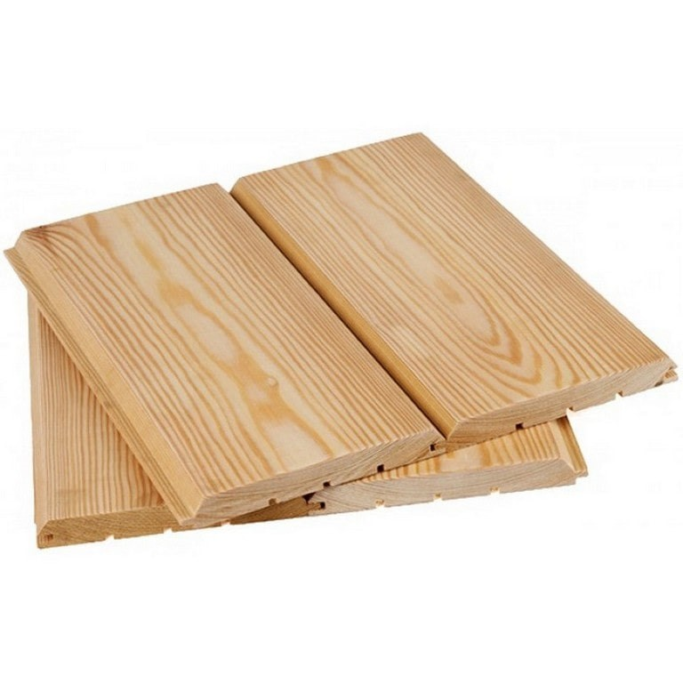

Имитация бруса
Имитация бруса — отделочный пиломатериал. Реалистично воспроизводит фактуру брусовых цельнодеревянных стен. От вагонки отличается большей толщиной и шириной доски.
Изготавливают имитатор из массива деревьев хвойных пород — ели, сосны, лиственницы. На лицевой стороне снимают фаски, на внутренней прорезают компенсационные канавки. Элементы при монтаже соединяются между собой системой шип-паз, создавая прочную водонепроницаемую поверхность. Достаточно низкая стоимость имитации бруса позволяет получить бюджетную натуральную отделку.
Применение
Используют для облицовки фасадов, обшивки каркасных домов, бань, саун, беседок, террас. Обшивка скрывает кривизну стен и дефекты поверхности. Доску крепят вертикально, горизонтально или наклонно. Отделку монтируют по обрешетке из брусков с вентиляционным зазором для циркуляции воздуха.
Защитить материал от агрессивного воздействия внешней среды помогают пропитки антисептиками, антипиренами, покрытие красками, лаком, маслами или воском.
Параметры и сорта
Имитацию бруса на производстве изготавливают по размерам:
- толщина - до 40 мм;
- ширина - до 270 мм;
- длина - 2-6 м.
ГОСТ 8486-86 устанавливает следующие сорта пиломатериалов в зависимости от количества дефектов:
- Экстра — допускается минимальное количество здоровых сучков или смоляных кармашков на внутренней стороне изделий;
- Прима-доска — с 1 сучком или смоляным карманом на лицевой поверхности;
- А — не более 2 сучков и карманов на погонный метр, допустимы пропуски шлифовки, несквозные трещины с обратной стороны доски, торцевые микротрещины;
- АВ — на внешней части допускаются невыпадающие сучки, несквозные трещины;
- ВС — множественные дефекты, механические повреждения, сквозные трещины длиной до 0,5 м.
Пиломатериал просушивают в специальных камерах до 14-16% влажности. Сушка снижает усадку, позволяет избежать коробления, растрескивания доски при эксплуатации, облегчает механическую обработку.
Чтобы купить имитацию бруса хорошего качества по доступной цене, выбирайте сорт А или АВ. Самые высококачественные сорта — Экстра и Прима.
Преимущества пиломатериала
- эстетичность;
- прочность;
- экологическая безопасность;
- дополнительная шумо- и звукоизоляция;
- простой монтаж;
- долговечность (при регулярных защитных обработках).
Натуральные материалы отличаются яркой текстурой, приятным запахом. В помещениях, отделанных паропроницаемой древесиной, легко дышится. Смола, содержащаяся в древесине, обладает бактерицидным действием, отпугивает жучков-древоточцев.
Стоимость имитации бруса
| Имитация бруса клееная | от 35*200 до 40*270 мм | 1 300 руб. (за м2) | |
| Имитация бруса клееная сорт АВ+ S раб. | от 1,29 кв.м до 27*225 мм | 1 320 руб. (за м2) | |
| Имитация бруса из лиственницы класса Экстра | 80*185 мм | 1 580 руб. (за м2) |  |
| Толщина x Ширина x Длина, мм | Цена за 1 м², рублей | |
|---|---|---|
| Кировский | Архангельский | |
| 16 x 140 x 2000 - 6000 | 280 | 300 |
| 18 x 140 x 2000 - 6000 | 330 | 350 |
| 20 x 140 x 2000 - 6000 | 350 | 370 |
| 20 x 190 x 2000 - 6000 | 350 | 370 |
| 28 x 190 x 2000 - 6000 | 450 | 470 |